Inner Sanctum (Layer 6) — Sauron's Throne Antechamber
Creative vision: Polished obsidian perfection with tarnished dark gold inlay — Sauron's craftsman aesthetic at its peak. The chambers before the Throne Room.
Palette: obsidian black (#1a1108), dark gold (#b8860b), scorched bronze (#4a3728), deep crimson (#8b0000), burnt umber (#1f1410)
Tileset: Row 22, Cols 12-23
Phase 1: Anchor Tiles REVIEW
Wall (Light)
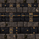
Row 22, Col 12
Wall (Dark)
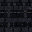
Row 22, Col 13
Floor (Light)
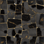
Row 22, Col 14
Floor (Dark)
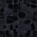
Row 22, Col 15
Phase 2: Doors (Programmatic — Gold Chevrons) REVIEW
Door Closed (Light)
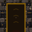
Row 22, Col 16
Door Closed (Dark)
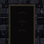
Row 22, Col 17
Door Open (Light)
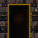
Row 22, Col 18
Door Open (Dark)
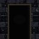
Row 22, Col 19
Phase 3: Stairs (Dark Gold Recolor) REVIEW
Stairs Down (Light)
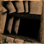
Row 22, Col 20
Stairs Down (Dark)
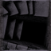
Row 22, Col 21
Stairs Up (Light)
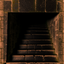
Row 22, Col 22
Stairs Up (Dark)
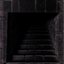
Row 22, Col 23
Phase 4: Environmental Tiles REVIEW
Procedural
Gilded Floor (Light)
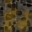
Gold dust overlay — floor decoration
Gilded Floor (Dark)
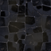
Eye Sigil (Light)
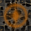
Sauron's eye — floor trap
Eye Sigil (Dark)
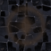
Crucible (Light)
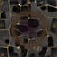
Bronze ritual vessel — 1.5x move cost
Crucible (Dark)
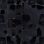
Gold Dust (Light)
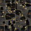
Scattered gold particles — floor decoration
Gold Dust (Dark)
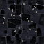
DALL-E
Fallen Statue (Light)
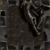
Blocks movement
Fallen Statue (Dark)
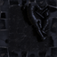
Trophy Plaque (Light)
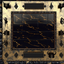
Wall decoration
Trophy Plaque (Dark)
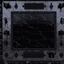
Raw DALL-E Output (256px)
Fallen Statue
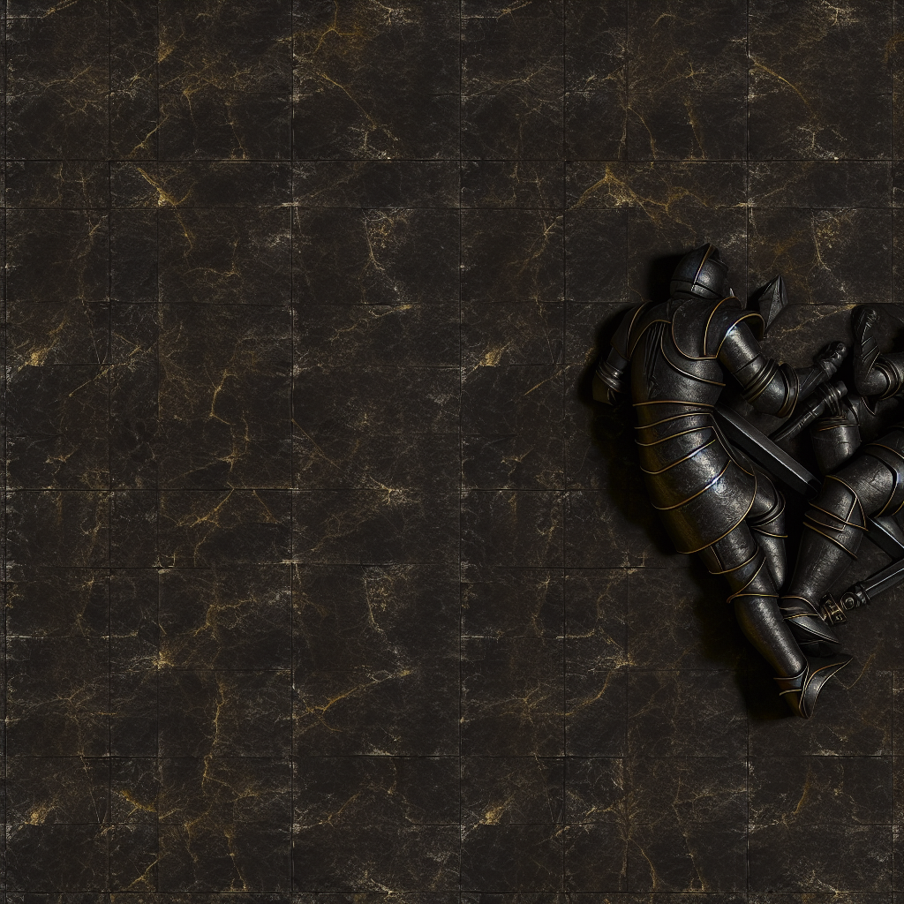
Trophy Plaque
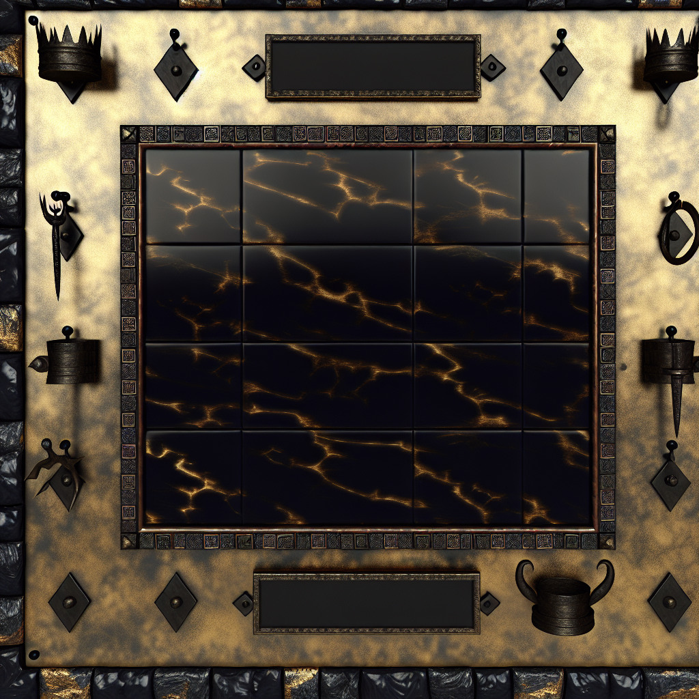